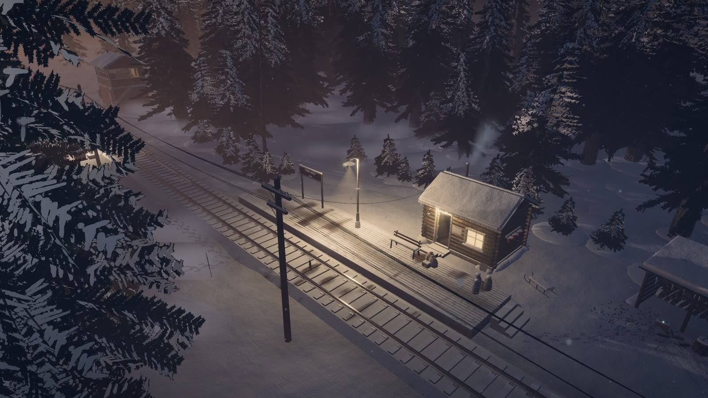
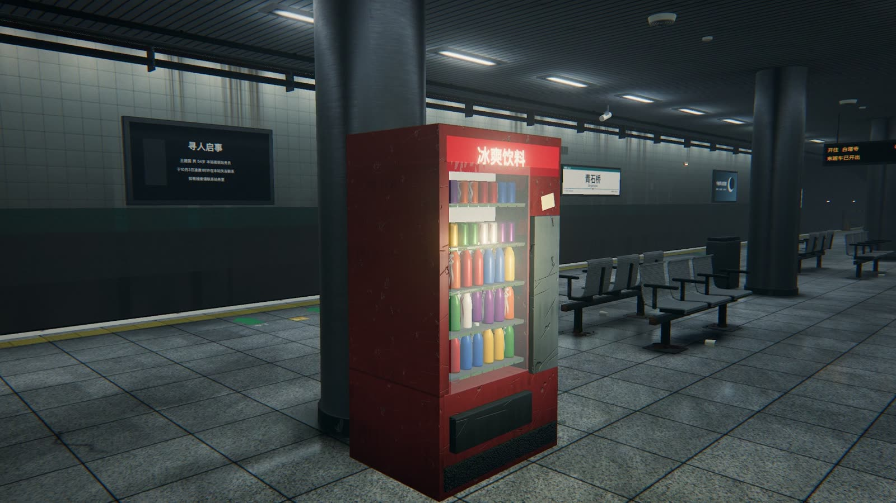

需要电脑和较新的 Chrome / Edge / Safari。点击画面开始，WASD 走路，鼠标看，Shift 跑，E 互动，Esc 释放鼠标。
想自己做一个？skill 和安装说明在 github.com/zhuqipaopao-maker/world-forge，支持 Claude Code、Codex 等 AI 编程工具。
一句话描述一个地方，AI 自己截图、自己找毛病、自己修，打磨几个小时，做出一个可以玩的 3D 场景。下面两个场景的所有模型、贴图和声音都是代码生成的。


需要电脑和较新的 Chrome / Edge / Safari。点击画面开始，WASD 走路，鼠标看，Shift 跑，E 互动，Esc 释放鼠标。
想自己做一个？skill 和安装说明在 github.com/zhuqipaopao-maker/world-forge，支持 Claude Code、Codex 等 AI 编程工具。